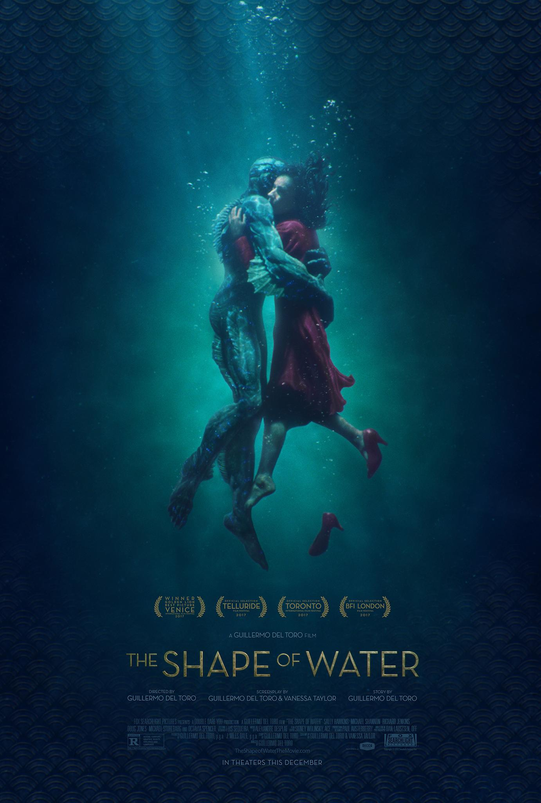

Filmography

Movie of the Day
Film. also called a movie, motion picture, theatrical film, or photoplay, is a series of still images that when shown on a screen create an illusion of motion images (due to the phenomenon)

Comparisons: Pick 2 Years
Pick 2 years from the dropdown menus and you'll get a random movie chosen from each of the years selected and be given an explanation of how they compare.

Awards Season
Guillermo del Toro's "The Shape of Water" continued its awards show streak, leading the pack with 13 nominations. "Dunkirk" followed behind with eight nods and Martin McDonagh's "Three Billboards Outside Ebbing, Missouri" with seven.
Directors
A film director is a person who directs the making of a film. A film director controls a film's artistic and dramatic aspects and visualizes the screenplay (or script) while guiding the technical crew and actors in he fulfillment of that vision.